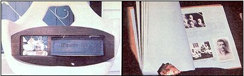

You house-log cover that's both attractive and durable ... and stock the body of the book
with plenty of photographs
You may be surprised to know that you can make history . . . at no risk to life and limb and without even venturing beyond your own front door! Now as you've probably guessed, I'm not talking about performing any feats of derring-do or overcoming seemingly insurmountable obstacles. instead, I'm suggesting that you take the time to research - and preserve - the story of your own dwelling . . . and thus add your bit to the recorded history of your region and family!
The practice of writing down a home's "genealogy"-in the form of a house log-has long been a custom in many parts of Europe. In North America, however, interest in keeping such records has only recently begun to spread . . . thanks (at least here in Canada) to the efforts of the Women's Institutes scattered across the land.
Several years ago, in fact, those organizations, through their national headquarters, sponsored a nationwide house-log competition. Folks from all over Canada responded to the challenge, producing a great number of unique books. At the time of that event, the Federated Women's Institutes put together a set of guidelines for members interested in competing in the contest. And there's no reason why you can't use the same general instructions to start preparing your own home's history!
ANYONE CAN PLAY
First and foremost, remember that a house log can be made for any dwelling ... whether it's a century-old stone farm building, a brand-new kit-built log home, a trailer, or even rented quarters. A friend of mine who's leased the same home for 20 years, for example, wrote the structure's story from its point of view. ("After all," she told me, "the house doesn't belong to me . .. it sort of belongs to itself!") The log begins, "This is my tale. I am situated on Lot H in the village of Pakenham."
THE COVER-UP
There's an old saying that advises us not to judge a book by its cover . . . but-while the axiom applies to a house log as well as to any other volume-the cover of your history should be both attractive (it is the first facet of the book that anybody will notice) and durable (because it's intended to last as long as the building itself). I've seen lovely house logs covered in leather and wood, and a particularly striking example that was decorated with a patchwork of wallpaper samples from every room in the home. However you decide to cover the book, though, remember that you'll want to be able to add pages and update information from time to time ... so use a ring notebook or a spring binder-or any arrangement that will make the addition of more paper convenient-as the "backbone" of your creation.
GETTING TO WORK
The first page of a house log should be reserved for information describing the precise location of the dwelling. If your home is situated in a rural area, note the lot and concession number, the township, and the county. An urban residence should be pin-pointed by lot, street number, town or city, and county. In addition to providing data about the site, the initial page should include the following statement: This log is to remain in the house and should be updated by future occupants!
The body of the book will be devoted to two topics. The first is a record of the construction of the building . . . the second is the history of its inhabitants.
THE BUILDING OF THE BUILDING
The amount of construction information available will, of course, vary from house to house. After all, an owner-built home from the turn of the century will likely have fewer surviving records from its early days than will a house put up in our age of endless forms and bureaucratic paperwork.
If possible, though, you should document the date of construction, the name of the architect and/or builder, the dates and descriptions of any significant alterations, and the materials used to build and remodel the residence (and where they were procured . . . since such data can be quite interesting to future inhabitants, especially if some of the components were gathered from the land on which the home is located). You'll also want to try to include sketches of the floor plan (perhaps the original blueprints are still available), as well as design drawings of any major changes made over the years.
Finally, it's both interesting and potentially valuable to put scale diagrams of waterlines, sewage systems, and the like in your logbook. If you do, at some time in the distant future when-for example-e drainage pipe buried by the side of the house blocks up and causes the basement to flood, the occupants of the house will be able to locate the trouble spot quickly and easily.
RESIDENT ROOTS
Information about the people who have lived in your house should include such facts as names, dates of birth and death, marriages, occupations, and so forth . .. and be as complete as possible for all the families that have lived in the residence.
Don't be afraid to do some research (check the local registry office, long-time residents of the area, school records, old newspapers, etc.), and to go into as much detail as you like in your mini-biographies. Seemingly small bits of knowledge can really make a log come to life. One woman! know included a photograph of her front door . . . along with a note explaining that the portal's split panel was a result of a brawl that occurred when the home served as a hotel during the 1850's!
EVERY PICTURE TELLS A STORY
Photographs-or old drawings-can often add a lot of interest value to a house log. Round up every shot you can find of the interior and exterior of the structure over the years. If you built your own home, be sure to add any step-by-step construction photos, too. And, of course, portraits of past and present residents should-when available-accompany the stories of those families.
A PERMANENT ADDITION
Once your log-book has been assembled, it should be installed in a permanent place in the house. Naturally, if you move away, you might want to make a photocopy of the log to take along, but the original should remain behind . . . to continue to grow. As occupants come and go, as families overcome hardships and experience joys, the log that you start now can become a small but significant part of the history of your area . . . and help maintain the links to the past that sometimes go a long way toward making life in the present more meaningful.
|
Photos by the Author Choose a house-log cover that's both attractive and durable..and stock the body of the book with planty of photographs |
 |
|